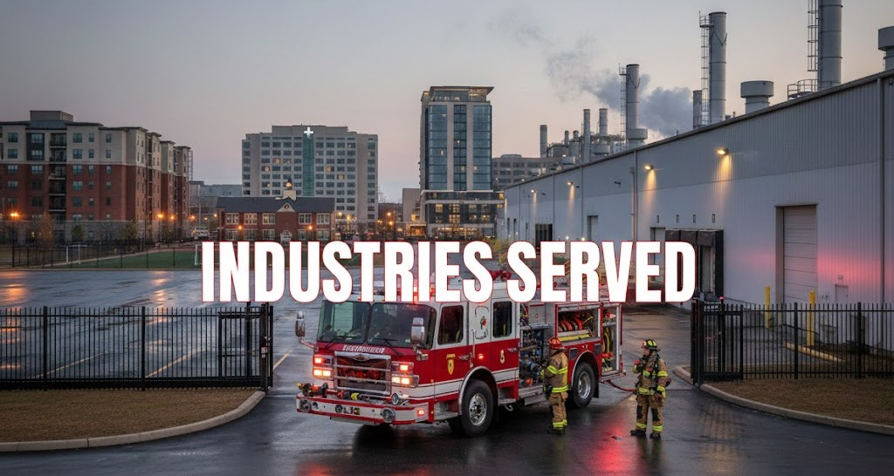

_____________________________________________________________________________________________________________________________________________________
←
INDUTRIES SERVED
_____________________________________________________________________________________________________________________________________________________
-
Commercial & Industrial
-
This sector includes office buildings, retail centers, warehouses, and business parks.
Protection of large numbers of employees, valuable inventory, and critical data infrastructure.
-
Comprehensive sprinkler systems, networked fire alarm panels, emergency lighting, and specialized clean-agent suppression systems for server rooms and data centers to prevent equipment damage.
-
Residential Buildings
-
This primarily refers to multi-family housing like apartment complexes, condominiums, and high-rises. Life safety and preventing a fire from spreading from one individual unit to another.
-
Residential-grade fire sprinklers, smoke and carbon monoxide detectors in every unit, fire-rated doors, and clearly marked, well-lit evacuation stairwells.
-
Healthcare
-
Hospitals, outpatient clinics, and nursing homes fall into this category. Protecting highly vulnerable populations, including patients who may be bedridden, in surgery, or otherwise unable to evacuate easily.
-
Advanced smoke detection, rigorous fire compartmentalization (using fire walls/doors to create safe zones within the building), and specialized non-magnetic fire extinguishers for areas like MRI suites.
-
Education
-
This includes K-12 schools, college campuses, and university dormitories.Managing the safety of dense populations of students and staff across sprawling campuses.
-
Robust alarm systems with voice evacuation capabilities, kitchen hood suppression systems for cafeterias, and centralized monitoring systems that can pinpoint the exact location of an alarm across multiple buildings.
-
Hospitality
-
Hotels, resorts, motels, and large restaurants make up the hospitality sectors. Protecting guests who are often sleeping and unfamiliar with the building's layout, as well as managing high-risk areas like commercial kitchens.
-
In-room sprinklers and smoke detectors, highly visible exit signage, and heavy-duty wet chemical fire suppression systems over commercial cooking equipment like fryers and grills.
-
Manufacturing
-
This covers factories, processing plants, and industrial assembly facilities. Mitigating high-risk environments that may contain combustible dust, flammable liquids, heavy machinery, or hazardous chemicals.
-
Specialized hazard suppression systems (such as foam, dry chemical, or water deluge systems), spark detection and extinguishing systems in ductwork, and heavy-duty industrial fire alarms designed to be heard over loud machinery.